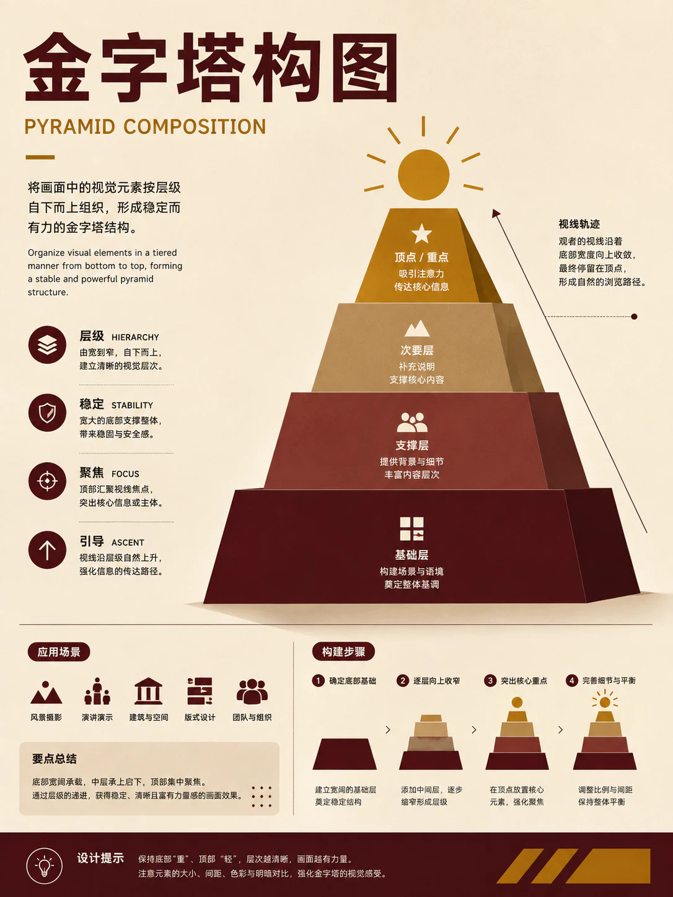

平等并列的多选项对比
错用后果：把四个同级产品或并列团队成员放进金字塔，观众会自动以为顶格最高级、底格最次要，无意间制造虚假尊卑。
PYRAMID COMPOSITION
将画面中的视觉元素按层级自下而上组织，形成稳定而有力的金字塔结构。
Organize visual elements in a tiered manner from bottom to top, forming a stable and powerful pyramid structure.
由宽到窄，自下而上，建立清晰的视觉层次。
宽大的底部支撑整体，带来稳固与安全感。
顶部汇聚视线焦点，突出核心信息或主体。
视线沿层级自然上升，强化信息的传达路径。
拖各层左右把手独立改宽 · 横拖塔身调收束坡度 · 点任意两层互换位序 · 方向键精调
底部宽阔承载，中层承上启下，顶部集中聚焦。通过层级的递进，获得稳定、清晰且富有力量感的画面效果。
建立宽阔的基础层奠定稳定结构
待校准添加中间层，逐步缩窄形成层级
待校准在顶点放置核心元素，强化聚焦
待校准调整比例与间距，保持底重顶轻
待校准BEYOND A FLAT TRIANGLE
很多人把金字塔构图当成「画一个三角形」，其实两者分工截然不同。041 三角构图关心的是二维平面里三条边构成的刚性外框；而 042 金字塔构图的核心是自下而上的分层叠筑——像盖石台一样，把内容按体量、重量与优先级切成 3 到 4 个清晰梯级。
同一座三角形轮廓，不切层时眼睛只看到「一座山」；切成 3 到 4 级阶梯后，眼睛立刻读出「谁是底座、谁做承托、谁在塔尖」。可一旦贪多切到 6 级以上，最顶层面积急剧缩到总面积的 3% 不到，既放不下标题，密集横缝还会把视线割碎。
VISUAL GRAVITY & WEIGHT
原海报底栏的设计提示写得很直白：「保持底部“重”、顶部“轻”，层次越清晰，画面越有力量。」视知觉学者鲁道夫·阿恩海姆在《艺术与视知觉》（1954 / 1974 修订版）中指出，人眼会本能地用重力经验判断画面：面积越大、色值越深、位置越低的色块，心理上的「视觉重量」就越沉。
FOUR PATHS OF ASCENT
原海报右侧专门标出了一条向上的「视线轨迹」：「观者的视线沿着底部宽度向上收敛，最终停留在顶点，形成自然的浏览路径。」不过，同样叫金字塔，退台、斜坡、偏轴与倒置四类轮廓引导目光的节奏截然不同——下面点选四种形态，观察发光视线点在哪一段停得最久。
把整座阶梯上下翻个身，就跨入了 043 倒三角构图：视线变成自上而下的加速俯冲，安定感让位于紧迫与冲击。
FIVE REAL-WORLD ARENAS
042 原海报在左下角列出了五个最常用到金字塔构图的领域：风景摄影、演讲演示、建筑与空间、版式设计、团队与组织。切到任意一个场景，再试着「抽掉」其中任意一层，就能立刻看懂每一级台阶不可替代的分工。
WHEN TO BREAK THE PYRAMID
金字塔自带强烈的「上下尊卑」和「稳重端庄」暗示。当你的内容本质是平等并列、循环往复，或者必须一秒制造紧迫冲击时，硬套金字塔反而会传递错误的潜台词。点开每张卡片的切换钮，对比错用与替代骨架。
错用后果：把四个同级产品或并列团队成员放进金字塔，观众会自动以为顶格最高级、底格最次要，无意间制造虚假尊卑。
错用后果：正金字塔太稳、太守成，用来做极限运动、悬疑预告或危机快讯，会让本该紧绷的气氛一下子松弛下来。
错用后果：正如马斯洛需求理论被塞进金字塔后的教训：原本互相回流、来回切换的过程会被硬生生锁死成单向爬梯。
错用后果：金字塔顶角空间天然极小，一旦强拆到 6–8 层，最顶层连四个字都放不下，底部却宽到跨出页面，图文严重失调。
推荐替代：超过 4 层就改用清晰的树状缩进或矩形模块化排布（见 046 矩形构图）。
PRACTICE · SPOT THE SOUND PYRAMID
题目：为「古建营造特展」制作一张四级主视觉海报。下面四张草图的暖沙纸底、总高度、四段文案与顶峰日轮完全相同，唯一差别是四层石阶的宽幅递进与明暗排布。请选出最符合金字塔构图要领的一张：
ORIGINAL POSTER & INDEX
